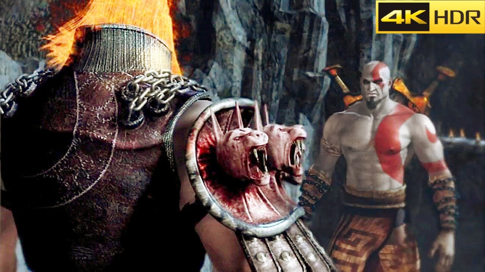

In the game you play as Kratos, an Anti-Hero, Spartan Warrior, and Demi-God who is sent by the Greek Gods to kill off Ares, The god of war. As the story progresses, the viewers realise that Kratos was a former servant of Ares tricked into burning his village and slaughtering his own family. Now he seeks Vegeance upon Ares and The Gods who minipulated him.

Where To Begin Playing
God of war has had many games throughout the franchises lifetime. Out of all the games that have been released so far one of the best for beginners is God of war 4: 2018. This game is so highly rated because it allows the player to roam freely throughout the nine realms as they have many creative tools at their disposal to fight enemies. In this world you get to experience a new world and new history in which you can also learn about krato's past and future wiht his son Atreus.
Latest Game In The Franchise: God Of War: Ragnarok
God of War: Ragnarok follows Kratos using three main weapons to jounrey through the world
Blades of Chaos: The blades are weapons that were used in the original trilogy of games in which are re-intriduced in the fourth installment. The character swings the blades with wrist chains with primordial fire fueled inside.
Leviathan Axe: In the new game series the Axe is a weapon that kratos uses as his primary. The axe was given by his wife fye in which the blade is infused with ice magic which Kratos charged up and freezes the enemies.
Draupnir Spear: In Ragnarok, Kratos uses this new spear in order to take down Odin, the norse god. This spear is used as a bombing tool in which he throws and pierces the enemy.